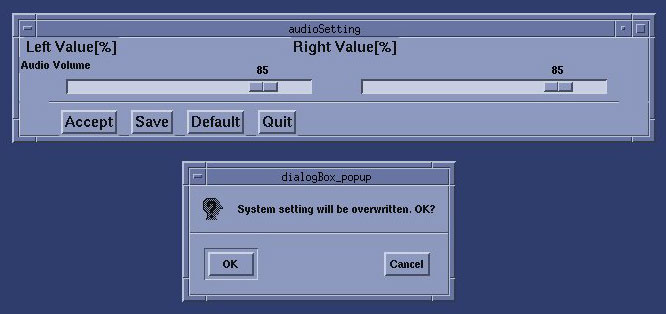
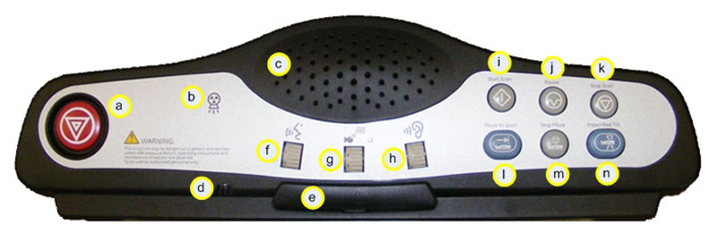
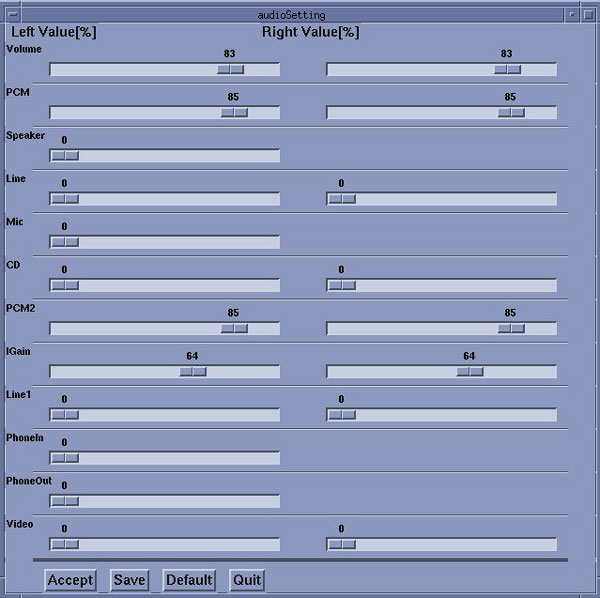

Proprietary to General Electric
Direction 5224328-800, Rev# 5
Dir 5224328-800 LightSpeed 5.X HP60 Limited Access Service
Methods - Adv.
Proprietary to General Electric |
| Required Persons | Preliminary Reqs | Procedure | Finalization |
|---|---|---|---|
| 1 | Timing Not Applicable | 30 mins | 10 mins |
This procedure troubleshoots issues with the Autovoice board.
| Last Revised on: | 30 July 2007 |
| Item | Qty | Effectivity | Part# | Manufacturer | |
|---|---|---|---|---|---|
| FE supplied PC headset or speakers | 1 set | - | - | - | |
| ELECTROCUTION HAZARD | |
| HIGH VOLTAGES PRESENT. | |
| Use proper lockout/tagout procedures before replacing components. Follow ALL required safety and PPE procedures customary for your organization when working on this product. |
| NOTE: | On all HP xw8xxx Host PCs, ensure that integrated audio is enabled in the PC's BIOS. If integrated audio is disabled in BIOS, Autovoice will not function. |
On desktop screen:
Open AutoVoice Volume by clicking [AutoVoice] on [Desktop Toolchest] .
Bring audio volume to 100% for both Right and Left Channels.
Select [Accept] then [Save and Quit] .
Illustration 1: Audio Setting

“Left” adjusts the volume for the operator at the console, and “Right” adjusts the volume for the patient in the gantry.
Make sure the SCIM AutoVoice volume “g” is all the way up to 9.
Illustration 2: SCIM

Try autovoice.
On the Scan Desktop, select [PROTOCOL MANAGEMENT] .
Select [AUTO VOICE RECORD] .
Click the [3.4] button, to the right of “FF2. Inspiration”.
Click the [PLAY] button, to play the Inspiration AutoVoice message.
If no success, remove console front cover and check if Intercom Box (ICOM) power LED is ON.
If ICOM LED is OFF, check power cable connection.
If power remains off, order ICOM box.
If ICOM LED is ON, press [RESET] button on the Intercom Box (ICOM).
Press [POT] button on ICOM until the LED is on for P_MAX (Patient Maximum).
Press and hold [VOLUME UP] button for 5 seconds.
Try autovoice again.
If no success, open a Unix Shell.
Type audioSetting<Enter>.
In pop-up window, bring Volume and PCM values to 100%.
Select [Accept] then [Save and Quit] .
Illustration 3: Audio Settings Screen

Only Volume and PCM settings effect AutoVoice performance. All other settings should not be altered.
Try autovoice again.
If no success check the HP Host PC Audio out jack (front or back) with a PC Headset to verify the HP Host PC is playing the AutoVoice.
If no audio is heard replace the HP Host PC.
If “Yes” audio is heard, reseat the audio cables on Host PC.
If problem remains does SCIM AutoVoive Volume "g" have any effect?
If "Yes" order a new SCIM.
Otherwise order the ICOM box and/or Audio cables.
Reinstall all removed covers.
Reset Autovoice Volume on Desktop Toolchest to default value and save.
Reset audioSettingVolume settings to default values and save.